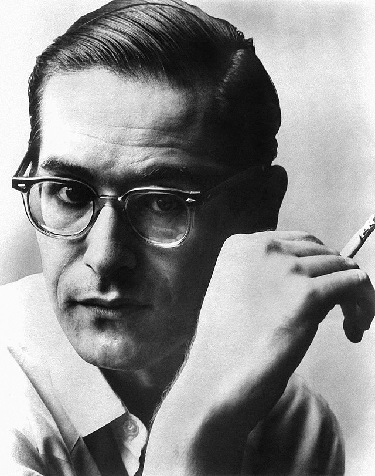

Bill Evans
William John Evans (August 16, 1929 – September 15, 1980) was an American jazz pianist and composer who worked primarily as the leader of his trio. His use of impressionist harmony, interpretation of traditional jazz repertoire, block chords, and trademark rhythmically independent, "singing" melodic lines continues to influence jazz pianists today.
Born in Plainfield, New Jersey, United States, he was classically trained at Southeastern Louisiana University and the Mannes School of Music, in New York City, where he majored in composition and received the Artist Diploma. In 1955, he moved to New York City, where he worked with bandleader and theorist George Russell. In 1958, Evans joined Miles Davis's sextet, which in 1959, then immersed in modal jazz, recorded Kind of Blue, the best-selling jazz album ever.
In late 1959, Evans left the Miles Davis band and began his career as a leader, with bassist Scott LaFaro and drummer Paul Motian, a group now regarded as a seminal modern jazz trio. In 1961, two albums were recorded at an engagement at New York's Village Vanguard jazz club, Sunday at the Village Vanguard and Waltz for Debby; a complete set of the Vanguard recordings on three CDs was issued decades later. However, ten days after this booking ended, LaFaro died in a car accident. After months of seclusion, Evans reemerged with a new trio, featuring bassist Chuck Israels.
In 1963, Evans recorded Conversations with Myself, a solo album produced with overdubbing technology. In 1966, he met bassist Eddie Gómez, with whom he worked for the next 11 years. During the mid-1970s Bill Evans collaborated with the singer Tony Bennett on two critically acclaimed albums: The Tony Bennett/Bill Evans Album (1975) and Together Again (1977).
Many of Evans's compositions, such as "Waltz for Debby", have become standards, played and recorded by many artists. Evans received 31 Grammy nominations and seven awards, and was inducted into the DownBeat Jazz Hall of Fame.
Bill Evans Early Discography
- 1956 Jazz Conceptions Trio with Teddy Kotick (bass), Paul Motian (drums) Riverside
- 1958 Everybody Digs Bill Evans Trio with Sam Jones (b), Philly Joe Jones (d) Riverside
- 1959 Green Dolphin Street Trio with Paul Chambers (b), Philly Joe Jones (d) Milestone
- 1959 Ivory Hunters Quartet with Bob Brookmeyer (piano instead of usual trombone), Percy Heath (b), Connie Kay (d) United Artists
- 1960 Portrait in Jazz Trio with Scott LaFaro (b), Paul Motian (d) Riverside
- 1961–62 Nirvana Herbie Mann (flute) and Bill Evans Trio with Chuck Israels (b), Paul Motian (d) Atlantic
- 1961 Explorations Trio with Scott LaFaro (b), Paul Motian (d) Riverside
- 1961 Sunday at the Village Vanguard Live - Trio with Scott LaFaro (b), Paul Motian (d) Riverside
- 1961 Waltz for Debby Live Trio with Scott LaFaro (b), Paul Motian (d) Riverside
- 1962 Loose Blues Quintet with Zoot Sims (tenor sax), Jim Hall (g), Ron Carter (b), Philly Joe Jones (d) Milestone
- 1962 Moon Beams Trio with Chuck Israels (b), Paul Motian (d) Riverside
- 1962 How My Heart Sings! Trio with Chuck Israels (b), Paul Motian (d) Riverside
- 1962 Interplay Quintet with Freddie Hubbard (trumpet), Jim Hall (g), Percy Heath (b), Philly Joe Jones (d) Riverside